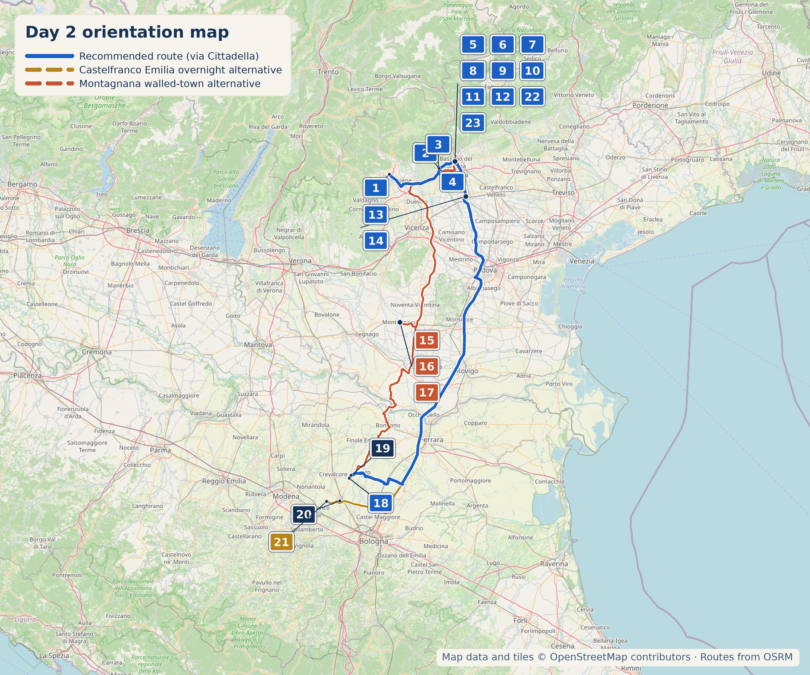

Overview
11 September 2026 is a Friday. Bassano and tonight's overnight base are the two fixed points of the day — Marostica and the Cittadella-or-Montagnana choice are both genuinely optional and can be trimmed without anything breaking. This is the longest driving day of the stage: treat it as a long day and be honest about what to cut if it runs late.
1. Marostica (optional but recommended)
%2007.jpg)
- Why stop: A walled town with two castles linked by a climbable wall, and a giant marble chessboard set into the main piazza. Ciliegia di Marostica was genuinely Italy's first cherry to earn EU IGP status (2001/2002) — though cherry season is May–June, well out of season in September.
- Honest flag: The wall-walk between Castello Inferiore and Castello Superiore only opens Sundays/holidays, March–November — not walkable on this Friday. Walking the piazza and climbing to Castello Superiore by road/path independently is still fine.
- Did-you-know: The next live Partita a Scacchi a Personaggi Viventi (human chess match) is actually scheduled for the evening of 11 September 2026 itself, 9:00pm in this piazza — but by then the day's plan has you well past Bassano and en route to the overnight base, so treat this as a curiosity, not something to build the day around.
- Time required: 45–60 min
- Parking: Via IV Novembre or Piazzale Rimembranze, both 2–5 min walk to the piazza — the piazza itself is closed to cars.
Family-run since 1904, right on the main piazza — bigoli, trippe, polenta, coniglio, baccalà alla vicentina, market-driven daily menu. Open Friday, no closure risk.
2. Bassano del Grappa (essential, the day's benchmark stop)
- Why stop: Palladio's covered wooden bridge, still standing at the heart of town. On the bridge itself sits the oldest continuously operating distillery in Italy — founded 1779, visited over the centuries by Hemingway (who namechecked grappa in A Farewell to Arms), D'Annunzio, and Queen Elizabeth II.
- Time required: 3–4 hours including lunch, for the bridge, old town, and museums below
- Parking: Parcheggio Delle Piazze (Viale delle Fosse, 420 spaces) or Parcheggio Il Ponte (Piazzale Cadorna, 279 spaces), both paid, near the historic centre — park once, the centre is largely pedestrian.
Free entry, five self-guided rooms, right on the bridge — an easy add to the walk-through rather than a separate errand.
At the foot of the bridge on the Angarano side.
A genuine Canova wing — plaster casts and monochrome drawings — most visitors skip in favour of the bridge. Flag: the museum was closed for maintenance through 1 September 2026, reopening just before this trip; worth a quick pre-trip recheck that it did reopen on schedule.
A monumental 1934 WWI ossuary holding 5,405 remains, including Prince Umberto of Savoy-Aosta — genuinely somber rather than fun-quirky, but the kind of thing almost every visitor to Bassano walks past without knowing what it is.

A 12th-century fortress that passed to the Ezzelini family in the 13th century — Ezzelino III da Romano, one of medieval Italy's most notorious tyrants, whose brutal reign later inspired Verdi's first opera, "Oberto." After restoration, the free walkway (camminamento) between its two towers is open daily in season, with panoramic views over the Brenta valley. Genuinely under-visited relative to the bridge two minutes away.
Bassano — Coffee, Pastry & Aperitivo
A genuine local institution since 1974 — the pizzetta and the ciambellone bassanese are a locals' ritual. Also look for Forti Bassanesi, the local spiced cocoa-wine biscuit rings.
Third-generation Miotti family café and restaurant — a proper coffee or people-watching in the square, not just the nearest option.
.jpg)
Standing-room bar right on the Ponte Vecchio, running since 1779. Order a "mezzo e mezzo" — rhubarb liqueur (Rabarbaro) and Rosso Nardini in equal halves, about €2.20, drunk standing at the counter looking at the river. Drivers should taste cautiously or skip.
Since 1952, for the Sfogliatina — a recipe traced to the late 1400s, made by a family that has deliberately never modernised the process.
A historic pastry and chocolate shop operating since 1961, current head pastry chef Mario Sarri — an alternative if Bolcato has a queue.
Lunch — Bassano

Traditional, highly rated, book ahead — baccalà mantecato is the dish reviewers single out most. Honest correction: an earlier draft called this "probably the town's oldest osteria" — that claim isn't independently confirmed (a competing spot, Antica Trattoria Da Gamba, dates to 1932 with an equally strong claim), so treat Alla Caneva as traditional and well-reviewed, not verified-oldest.
Local Speciality — Bassano
Sfogliatina Bolcato; ciambellone bassanese; "La Gata," a cocoa-almond-corn-honey-grappa cake — correction: this is actually a wider Vicenza-province creation by a consortium of seven pastry chefs, not a Bassano-specific invention, though it's sold in Bassano shops too. Morlacco cheese is a real Slow Food presidium from Monte Grappa malghe, but it's a mountain-dairy product tied to a May–October season — don't count on finding it easily walk-in during a September town visit.
What to Buy
Bassano: Forti Bassanesi biscuits, a bottle of Nardini grappa direct from the Grapperia, a box of Bolcato sfogliatine for the car. Marostica: cherry preserves or cherry grappa, sold locally year-round even out of season. Montagnana, if that's today's walled town: Prosciutto Veneto Berico-Euganeo DOP, a sweeter, lighter cousin of Parma and San Daniele that rarely travels outside the region.
Hidden Gem
Tempio Ossario — a monumental WWI ossuary two minutes from the crowds on the bridge, that almost nobody visiting Bassano for the day knows is there.
3. One walled town — Cittadella or Montagnana, not both

- Why stop: Walk part or all of the Camminamento di Ronda — the complete elevated parapet, about 1.5 km, roughly 15 metres above the town. An active, visual experience rather than another church or museum. €5/€3, ticket office at Porta Bassano.
- Coffee/pastry: L.AB Pastry & Coffee, Via Muri Bianchi — a current specialty-style option, small but well-reviewed.
- Time required: 1–1.5 hours. Good choice if Bassano has run long or the group wants to reach the overnight base sooner.

- Why stop: One of the best-preserved medieval walled towns in Europe — a near-complete 2km ring of merloned walls with 24 towers. Also the historic home of Prosciutto Veneto Berico-Euganeo DOP. See the full wall circuit, Castello di San Zeno, the 38m Mastio di Ezzelino tower, and the Duomo di Santa Maria Assunta (works attributed to Giorgione and Veronese, mass/visiting hours not independently confirmed).
- Taste/buy: Le Mura Bar-Gastronomia, inside the walls, has a deli counter — a plate of Prosciutto Veneto DOP (~€20), or vacuum-packed to travel with you for the rest of the trip.
- Time required: 1.5–2 hours, more if lunch happens here instead of Bassano. This is the stop to cut first if the day is running late.
Tonight's Base
A soft landing in the genuinely unglamorous, produce-rich Bolognese countryside — flat, fertile Samoggia-plain farmland rather than a postcard town, before a quiet family day tomorrow. Deep, ordinary Emilia: tortellini and tagliatelle made the way grandmothers here have always made them.
Genuinely old-school and unphotogenic in the best way. Homemade tortellini in brodo, tagliatelle al ragù, coniglio alla cacciatora, and a zuppa inglese reviewers keep comparing to their own grandmother's.
Local speciality: a well-known local product sold as Melone di San Matteo della Decima — correction: this is best described as a traditional product (PAT), not confirmed EU IGP; some sources appear to conflate it with the separate, genuinely-registered Melone Mantovano IGP from Mantua province. Also: africanetti, a sugar-egg biscuit, and standard Bologna-area tortellini and tagliatelle.
Accommodation
In the village itself, garden setting — the most practical option for staying close to family the next day. Small sample of reviews (5.0/3 Google) but consistently positive.
#3/12 hotels in town on Booking, 9.5 comfort / 9.4 location / 9.6 staff across 561+ reviews. No on-site dinner restaurant. From ~€70/night.
Frescoed rooms, garden/countryside setting, outdoor fireplace, picnic area, free private parking — genuinely closer in character to L'Ulivo's quiet-countryside brief than a city hotel, just in a different town (~24 km / 30 min from San Matteo della Decima). One recurring minor complaint: WiFi speed. Worth considering for both tonight and tomorrow night, since it also sits well for Day 3's San Giovanni in Persiceto / Vignola loop.
Four-star, right beside Piazza Maggiore/Basilica San Petronio. Honest trade-off: this is a genuine Bologna city-centre stay, not the "soft landing in the countryside" the rest of this leg is built around — choose it only if trading proximity to family for a memorable city night is worth it.
Today's Route & Timing
Optional stop maps: Marostica Montagnana (alternative to Cittadella) Villa Tartaruga (alternative overnight)
Print timing summary: suggested 9:00am departure from Santorso. Base day (Santorso → Bassano, essential stop) is 3h45–4h45. Add the walled-town + overnight combination: Cittadella → San Matteo della Decima (3h24–3h54), Cittadella → Castelfranco Emilia/Villa Tartaruga (3h32–4h02), Montagnana → San Matteo della Decima (4h14–4h44), or Montagnana → Castelfranco Emilia (4h26–4h56) — pick one. Marostica adds 45–60 minutes. Under 8 hours is comfortable; 8–10 is a long day; over 10 is very long — this is already the longest driving day of the stage, so lean toward cutting Marostica or the walled town before cutting Bassano.
Day 2 route map

Numbered points of interest
- Agriturismo da Mea, Santorso StartVia del Campo Romano 15, 36014 Santorso VI, Italy
GPS: 45.7251709, 11.4188371 - Piazza degli Scacchi & Castello Inferiore Optional stopPiazza degli Scacchi, 36063 Marostica VI, Italy
GPS: 45.7455140, 11.6552998 - Castello Superiore, Marostica Optional / viewpoint36063 Marostica VI, Italy
GPS: 45.7496871, 11.6523916 - Osteria Madonnetta Optional lunchVia Vajenti 21, 36063 Marostica VI, Italy
GPS: 45.7448051, 11.6550451 - Ponte Vecchio & Grapperia Nardini Essential stop36061 Bassano del Grappa VI, Italy
GPS: 45.7675140, 11.7311146 - Museo degli Alpini MuseumVia Angarano 2, 36061 Bassano del Grappa VI, Italy
GPS: 45.7675730, 11.7306876 - Museo Civico di Bassano Optional museumPiazza Garibaldi 34, 36061 Bassano del Grappa VI, Italy
GPS: 45.7664915, 11.7350946 - Tempio Ossario Hidden gemPiazzale Luigi Cadorna, 36061 Bassano del Grappa VI, Italy
GPS: 45.7636398, 11.7334538 - Bottega del Pane Beltrame Food stopPiazza Libertà 25, 36061 Bassano del Grappa VI, Italy
GPS: 45.7667875, 11.7333642 - Danieli CoffeePiazza Garibaldi 39, 36061 Bassano del Grappa VI, Italy
GPS: 45.7668813, 11.7353468 - Osteria Alla Caneva LunchVia Giacomo Matteotti 34, 36061 Bassano del Grappa VI, Italy
GPS: 45.7678850, 11.7339387 - Pasticceria Bolcato / Dolce Bassano PastryPiazzetta Zaine, 36061 Bassano del Grappa VI, Italy
GPS: 45.7665000, 11.7355000 - Cittadella — Camminamento di Ronda Walled town / recommendedPorta Bassano, 35013 Cittadella PD, Italy
GPS: 45.6507763, 11.7832170 - L.AB Pastry & Coffee, Cittadella Food stopVia Muri Bianchi, 35013 Cittadella PD, Italy
GPS: 45.6364387, 11.7885209 - Montagnana — Castello di San Zeno Walled town / alternative35044 Montagnana PD, Italy
GPS: 45.2309674, 11.4686785 - Duomo di Santa Maria Assunta, Montagnana Historic site / alternativeVia San Giovanni 6, 35044 Montagnana PD, Italy
GPS: 45.2335698, 11.4680736 - Le Mura Bar-Gastronomia, Montagnana Food stop / alternative35044 Montagnana PD, Italy
GPS: 45.2335000, 11.4681000 - Antica Trattoria Bonasoni DinnerVia Cento, San Matteo della Decima, 40017 San Giovanni in Persiceto BO, Italy
GPS: 44.7056327, 11.2283385 - L'Ulivo B&B AccommodationVia delle Rose, San Matteo della Decima, 40017, Italy
GPS: approx. 44.7159632, 11.2364802 - Boutique Hotel San Giovanni Accommodation / alternateSan Giovanni in Persiceto, 40017 BO, Italy
GPS: 44.6353076, 11.1872698 - R&B Villa Tartaruga Accommodation / suggestionVia Garzolé 41-43, Rastellino, 41013 Castelfranco Emilia MO, Italy
GPS: 44.6269459, 11.1195137 - Castello degli Ezzelini Cool / quirkyPiazza Castello Ezzelini, 36061 Bassano del Grappa VI, Italy
GPS: 45.7690102, 11.7325263
OpenStreetMap-derived orientation map only, not turn-by-turn navigation. Use the Google Maps buttons above for live routing.
If Time Is Tight
Skip Marostica and the walled-town stop entirely. Santorso → Bassano (bridge, Nardini, lunch) → straight to the overnight base is a complete, satisfying day on its own.
If You've Got Half a Day
Add Marostica's piazza and Castello Superiore climb, and whichever walled town is on the way to tonight's base.
Skip It
🏆 Today's Winners
Road Trip Score
| Category | Rating |
|---|---|
| Food | ★★★★☆ |
| Coffee | ★★★★★ |
| Atmosphere | ★★★★★ |
| Photography | ★★★★★ |
| History | ★★★★☆ |
| Young Traveller Appeal | ★★★☆☆ |
| Worth Detour | ★★★★★ |